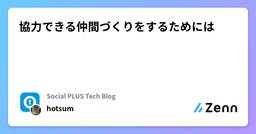

Social PLUS Tech Blogのフィード
https://zenn.dev/p/socialplus
株式会社ソーシャルPLUS 開発チームの技術ブログです。
フィード

協力できる仲間づくりをするためには
Social PLUS Tech Blogのフィード
だれだれがいくら売上をあげたなどを発表して競争関係で組織を運営している組織と同僚を信頼して協力して仕事をこなしていく信頼関係で組織を運営している組織。エンジニアだと、会議などでのマウントの取り合いや、どのエンジニアが優れているかを成果などで比較したりすることもあったり、競争関係を促す仕組みや雰囲気をもっている組織もあったり。競争関係の組織においては、緊張感があり、そのおかげで集中力が高く個々人のパフォーマンスが高く、なんでも一人でできる強強のエンジニアがあつまる感じ。一方、信頼関係の組織においては、問題が発生したらすぐに共有して、いろいろな知識や見方で問題に当たることができています。...
3日前

【Rails】saved_change_to_attribute? でハマった話と学んだこと
Social PLUS Tech Blogのフィード
こんにちは、st-1985 です。Rails アプリケーションでは、モデルの属性変更を検知する際に saved_change_to_attribute? メソッドを使用できます。ただしこのメソッドは「直前の保存によって変化したか」を返します。そのことによって思わぬ落とし穴にはまってしまったので、今回はその経験を共有したいと思います。 問題の概要開発しているアプリケーションには以下のようなフォロー状態の属性を持ったユーザーデータが存在しています。以前からフォロー状態になっている新しくフォロー状態になったそれぞれのフォロー状態に応じて画面の表示を変化させていました。問...
10日前
tfaction を段階的に導入した
Social PLUS Tech Blogのフィード
こんにちは、tsub です。2023 年 11 月から育休を取得していて今年の 5 月に復職しました。今回が Social PLUS Tech Blog への初投稿となります 😄この数ヶ月間、徐々に tfaction の導入を進めていました。元々 Terraform の CI/CD は GitHub Actions で自前のパイプラインを組んでいましたが、通常の開発タスクを優先しつつ隙間時間で CI/CD の改善を行っていたため、段階的に移行する形となりました。この記事では tfaction を導入した背景や、どのように導入を進めていったかについて説明したいと思います。 tfac...
15日前
Chrome で JavaScript から言語検出・翻訳がブラウザ単独でできるようになった話
Social PLUS Tech Blogのフィード
はじめにこんにちは、hamaguchi です普段仕事ではバックエンドエンジニアとして Ruby on Rails を使ったウェブサービスの開発を行なっていますが、プライベートで色々作ったりする中ではバックエンドだけではなくフロントエンドやインフラの領域も触らざるを得ないため色々と勉強中です特に TypeScript は慣れておくと便利そうだけどあんまりよくわかっていないので早めに仲良くなっておきたいなと思っています最近のブラウザは外国語のページを開くと「翻訳しますか？」と聞いてくれたりしますよね？ここでの翻訳は誰がやっているのかというと、ブラウザ自身が行なっているわけではな...
1ヶ月前
【Ruby】CORS の origin を動的に判断したい
Social PLUS Tech Blogのフィード
こんにちは、okumudです。フロントエンドのスクリプトを絡めて機能を任意サイト (別ドメイン) へ提供するにあたり、 CORS (オリジン間リソース共有: Cross-Origin Resource Sharing) の origin[1] を動的に判断させることがありました。本記事では rack-cors gem を使用して動的に判定する方法を紹介します。 はじめに CORS とはブラウザーはセキュリティ上の理由でスクリプトから異なる origin へのリクエストを制限しています。フロントエンドのスクリプトを絡めて機能提供を行うとき、スクリプトの実行がブロックされて...
1ヶ月前
Next.jsへの移行をほぼ1週間でやりきる
Social PLUS Tech Blogのフィード
どうもこんにちは、たくびーです。!この記事はAIを使わずに書かれています。弊社ではいくつかのアプリケーションが存在し、それらをモノレポで管理しています。今回はそのうちの1つのアプリケーションをReact + WebpackからNext.jsへ移行を行いました。 動機弊社にはいくつかのアプリケーションがあります。ここでは話を簡単にするために以下のようにしたいと思います。app1(Next.js Pages Router)app2(Next.js Pages Router)app3(React + Webpack) きっかけapp3以外のアプリケーションはNe...
1ヶ月前
MiniReactでReactの骨格を再現してみた
Social PLUS Tech Blogのフィード
こんにちは！Reactを普段使っていて、「これって中で何が起きてるの？」と思ったことありませんか？今回は、Reactの超ミニマル版「MiniReact」を自作してみます。全部JavaScriptで作ります。難しい依存関係はナシ！対応している機能はこちら：関数コンポーネント ✅useState()（複数呼び出し対応）✅JSXっぽい記法（h()関数）✅仮想DOMからの描画 ✅なんと100行以下！ なぜ作るの？Reactはすごく便利だけど、中身はちょっとブラックボックス。シンプルなReactを自作すると、次のような仕組みがスッキリ理解できます：...
2ヶ月前
Ruby ファイルのリネームと、それに対応する module の修正は別の commit にしよう
Social PLUS Tech Blogのフィード
Ruby を使用したコーディングではディレクトリに応じた module を定義することが多いと思います。例えば Rails で app/controllers/examples_controller.rb のようなコントローラーがあり、これの置き場所について controllers ディレクトリ直下ではなく、v1 ディレクトリを挟みたいとなったとします。その場合 app/controllers/v1/examples_controller.rb にリネームした後、ファイル内では module V1 の階層を増やすことになると思います。このとき、ファイルのリネームとファイル内の修正で...
2ヶ月前
AI に codemod を書かせて大規模リファクタリングに立ち向かう
Social PLUS Tech Blogのフィード
リファクタリングをしていて、ガッと数十ファイルにわたって一括で書き換えたいような場面、みなさんもありますよね？ 場合によっては数百かもしれません。（「そんなに広範囲に影響する時点で設計が悪いのでは？」という指摘はあるかもしれませんが、この記事では横に置いておきます。）この記事は、「AI に codemod を書かせて、それを実行すると書き換えが楽ですよ」というお話です。codemod のことを全く知らなくても、AI に書いてもらえば今日から使っていけるはずです。やることは簡単で、要は以下の手順を回すだけです。「これをこう書き換える codemod を作って」と AI にお願いする...
2ヶ月前
Dev Contaienr 上の Claude Code とホストの Mac で起動している Neovim を IDE 連携する
Social PLUS Tech Blogのフィード
masaki です。先日は「Dev Container で起動した Claude Code から Hooks でホストの Mac に通知する」という記事を書きました。https://zenn.dev/socialplus/articles/ea9be95301ae99今日は先日に引き続き、Claude Code と Dev Container の話題です。先日の記事の内容と共通する部分があるため、先日の記事に興味を持っていただいた方は今日の記事にも興味を持っていただけるかもしれません。 この記事で得られるものClaude Code (コンテナ) と Neovim (ホスト...
2ヶ月前
Next.js（Pages Router）× TanStack Query Hydrate で SSR のバケツリレー問題解消！
Social PLUS Tech Blogのフィード
こんにちは、ずっきーです！実務の中で「ページの初期表示を速くしたい！」という課題があり、「サイト設定（サイト名、サイトのロゴ画像など）」 の取得を SSR（サーバーサイドレンダリング） で行うようにしました。このアプリは少し特殊で複数のサイトを出し分けるので、 API でサイト設定を取得してます ☝️しかし、取得したサイト設定を Layout や Footer などの非ページコンポーネントでも使いたい場面が多く、props による受け渡しが多くなってしまいました。いわゆるバケツリレー問題に悩まされました、、Next.js の App Router であれば、 Server Co...
2ヶ月前
Dev Container で起動した Claude Code から Hooks でホストの Mac に通知する
Social PLUS Tech Blogのフィード
masaki です。弊社では生成 AI を業務に積極的に取り入れています。これまでにも以下のような記事を公開してきました。https://zenn.dev/socialplus/articles/d92f1296c8403ahttps://zenn.dev/socialplus/articles/618bc1016bc51c最近はコードアシストにとどまらず、エージェント型 AI ツールを活用する動きが活発になっています。今回は、よく話題にもなり弊社でも利用している Claude Code について、少し便利になる通知設定のテクニックをご紹介します。 はじめにClaude...
2ヶ月前
AWS PrivateLink クロスリージョン接続を活用して AWS と Datadog の通信を閉域網に閉じる
Social PLUS Tech Blogのフィード
概要弊社では USリージョンの Datadog サービスと、ap-northeast-1リージョンの AWS 環境上に起動している Datadog Agent の通信を NAT Gateway 経由のインターネット通信で行っていたのですが、セキュリティ上の理由からインターネットではなく AWS PrivateLink に閉じた接続に切り替えたいと考えていました。ただ、AWS PrivateLink がクロスリージョン接続に対応する前は、Datadog と AWS のリージョンを揃えるか、AWS VPC のリージョン間 VPC ピアリングを使って通信を確立する必要がありました。ど...
3ヶ月前
関西 Ruby 会議 08 参加レポート
Social PLUS Tech Blogのフィード
こんにちは、simomu です。2025年6月28日 に京都で開催された関西 Ruby 会議 08 に参加してきました。https://regional.rubykaigi.org/kansai08/いわゆる地域 Ruby 会議というもので、東京 Ruby 会議や松江 Ruby 会議など様々な地域で開催されています。https://regional.rubykaigi.org/関西での地域 Ruby 会議は 2024 年に大阪 Ruby 会議 04 ありましたが、関西 Ruby 会議としては 2017 年以来の開催とのことです。 印象に残ったセッション Witchcra...
3ヶ月前
フローチャートを React らしく手軽に実装できる React Flow の紹介
Social PLUS Tech Blogのフィード
こんにちは、steshima です。業務で React Flow に触る機会があったので、今回 React Flow の基本的な使い方を記事にしました。React Flow のバージョンは 12.6.4 です。 React Flow についてReact Flow は、React アプリ上でノードベースの UI を構築できるライブラリです。ドラッグ＆ドロップ・ズーム・ノード間接続など、インタラクティブなフローチャートが比較的簡単に作れます。https://reactflow.dev/ 基本的な使い方React Flow の基本的な使い方を紹介します。 Controll...
3ヶ月前
VRTのブレに立ち向かう
Social PLUS Tech Blogのフィード
こんにちは Social PLUS のフロントエンドエンジニアのまっくすです。弊社の開発環境の課題であった「VRTのブレ」に立ち向かった話を共有したいと思います。Storybook v6＋Storycap 環境で頻発していた VRT のブレに対してMSW でダミー画像をモック化storycap から storycap-testrun への移行で対策しました。撮影時間はやや伸びましたが、レビュー負荷が大幅に下がり、開発者体験が確実に向上したので、その手順とポイントを共有します。私たちと同様に、VRTのブレの悩みを少しでも解消することができれば幸いです！ 用語の整理...
3ヶ月前
Rails の本番作業を便利にする maintenance_tasks gem の紹介
Social PLUS Tech Blogのフィード
はじめに初めまして、バックエンドエンジニアの otsubo です 🙇♂️この記事では Rails の本番作業を便利にしてくれる maintenance_tasks gem を紹介します！実際に Rails アプリケーションに導入して本番作業が快適になったため、利用して分かったことや注意点をまとめました。https://github.com/Shopify/maintenance_tasksmaintenance_tasks は本番作業の実行環境を整えてくれる gem です。特に、下記のように DB や CSV のレコード単位で処理を行う単発の作業に向いています。DB ...
3ヶ月前
libvips が作る JPEG の quality は粗い
Social PLUS Tech Blogのフィード
こんにちは、st-1985 です。弊社のサービスの一つである Message Manager では、管理画面でアップロードされた画像を保存し、LINE 用のフォーマットに変換した上で配信していますが、その配信された画像に関してユーザーから「文字がつぶれて読みにくくなった」との声を頂きました。調査の結果、 ActiveStorage で指定している画像加工プロセッサ(libvips) の JPEG におけるデフォルトの品質(quality)が低めに設定されていることがわかりました。この記事ではその詳細と改善策について紹介します。 libvips についてlibvips は、大量...
4ヶ月前
ActiveStorage でグローバルな画像を扱う
Social PLUS Tech Blogのフィード
はじめに弊社では Ruby on Rails を使用しており、ActiveStorage を用いて画像やファイルを扱っています。BtoBtoC のサービスを運営しているので、エンドユーザには CDN を通して配信し、顧客企業向けには S3 の署名付き URL を発行してアクセスを制限した配信を行っています。S3 には CDN 用と署名付き URL 用の 2 種類のバケットを用意しています。先日ある機能を開発しているときに、全顧客で同一の画像（グローバルな画像）をエンドユーザ向けに配信したいという要件が出てきました。具体的な要件は次の通りです。エンドユーザ向けの画像なので、C...
4ヶ月前
Cursorにリーダブルコード準拠のルールを設定しようとして上手くいかなかった話
Social PLUS Tech Blogのフィード
はじめにこんにちは、koyablueです。この前久々にリーダブルコードを読み直しました。リーダブルコードの内容をルール化してAIに任せるといい感じに適用できるのでは？と思ったのでやってみます。具体的なコーディング規約準拠かどうか、というルールを適用させている例はわりとある気がしますが、可読性を担保するための汎用的なルールを正しく適用することは可能なのでしょうか（結果はタイトル通りなわけですが）。 やることリーダブルコードからルールにできそうなものを地道に抽出し、マークダウンにするルールのマークダウンをCursorのProject Rulesに設定するCursorに...
4ヶ月前